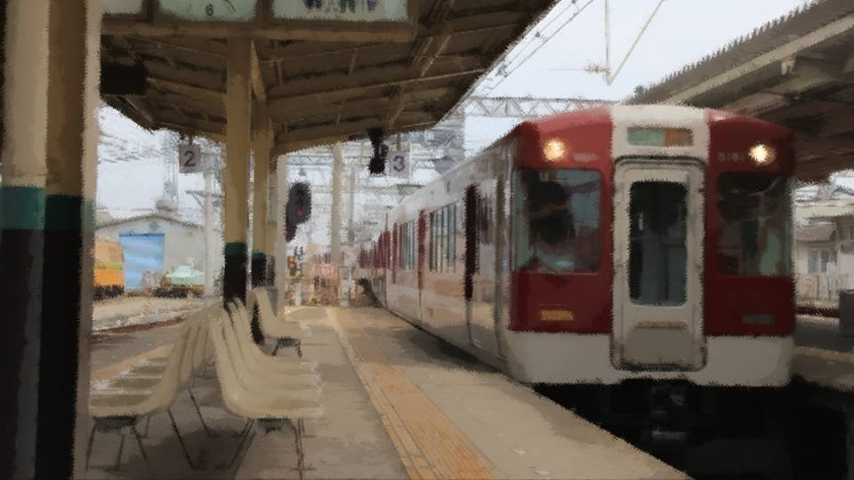
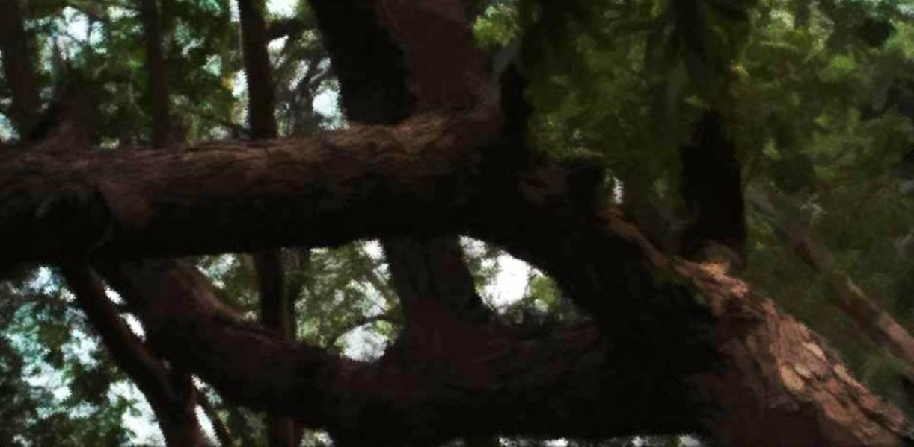
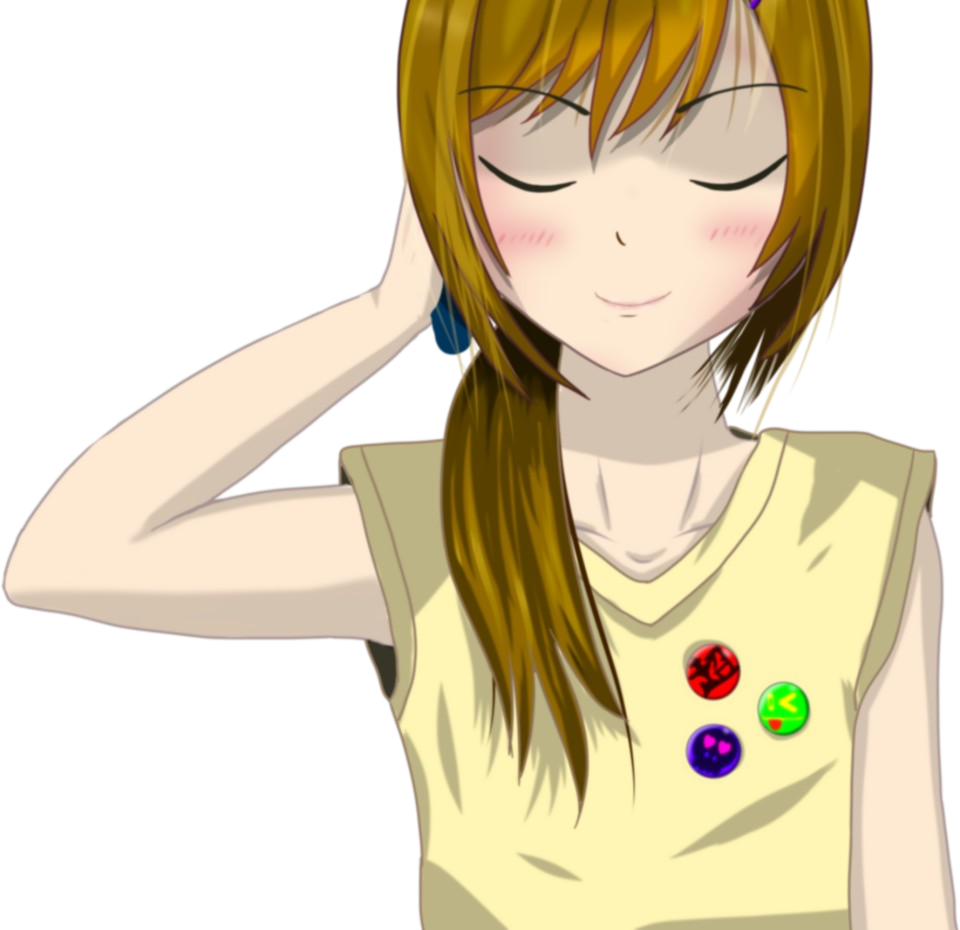
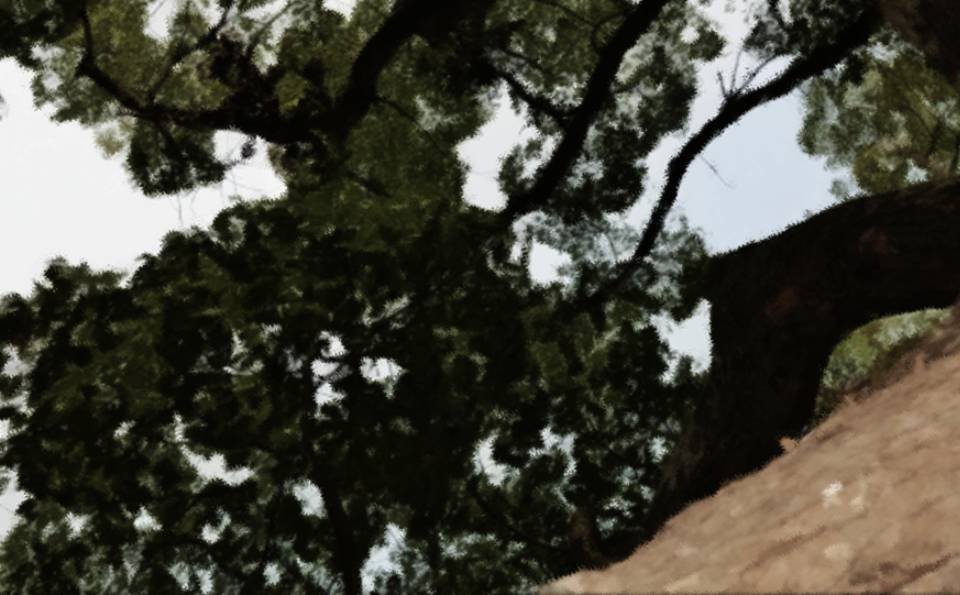
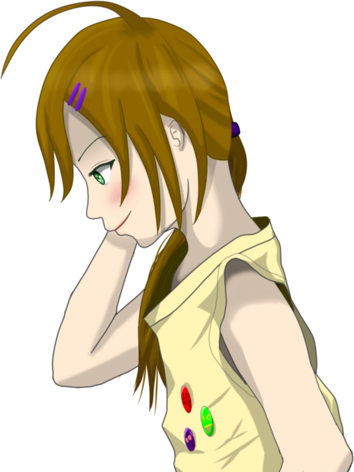
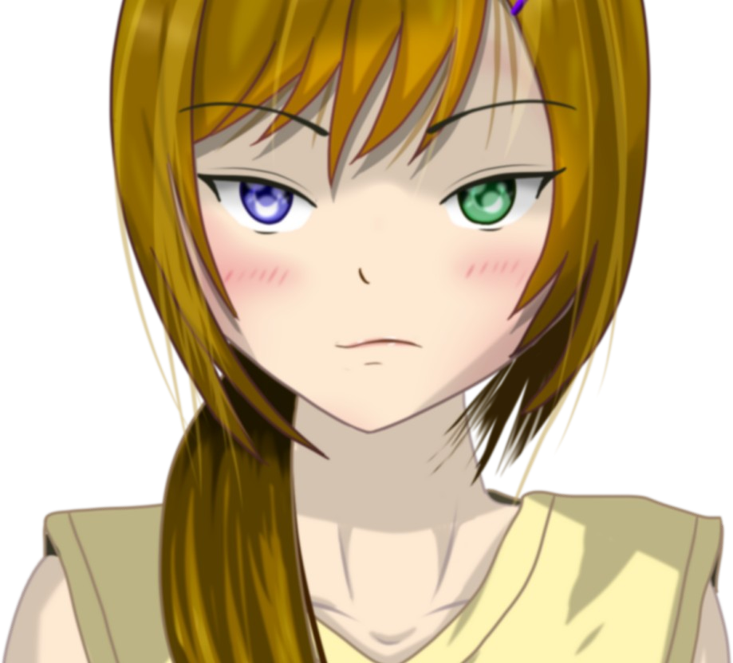
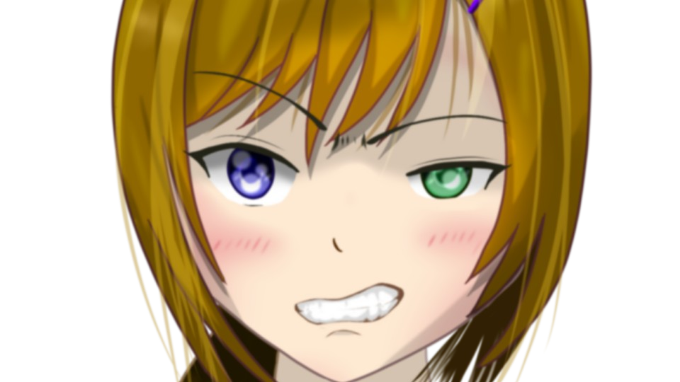
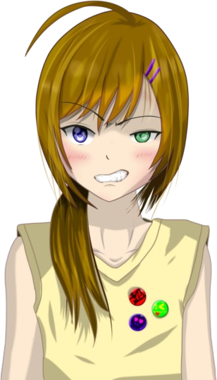

春花と魔女と死神


「先輩たち、本当に行っちゃうんですか……？」

「まあ、仕方ないだろ？ 親があんなことしちゃったら、この町には居づらいしさ。
それにもう、家も家族もここにはないわけだし」
「古郡先輩も……私、さみしいです」
「また来るから。私のおばあちゃんの家、電車で1時間だから、すぐに会えるよ」
「はい……」
五島は肩を震わせ下を向く。
「また来るから。私のおばあちゃんの家、電車で1時間だから、すぐに会えるよ」
「はい……」
五島は肩を震わせ下を向く。
私と春花は元木町を離れることになった。
容疑者や被害者の子供である私たちが元木町で暮らすには、好奇の目が多すぎる。
容疑者や被害者の子供である私たちが元木町で暮らすには、好奇の目が多すぎる。

「何だよ五島！ 最後くらい笑顔で見送ってくれよ！」

「最後なんて言わないで下さい！ 最後なんて、嫌です……」
「はははは！ ま、今度の夏休みにでも来てやるから、歓迎の準備しておけよ！」
「はははは！ ま、今度の夏休みにでも来てやるから、歓迎の準備しておけよ！」
「…………
プリマベラ……」
「え？」
「え？」
「え？」
「え？」
「プリマベラのデラックスセット！ 夏休みにおごってくれないなら歓迎しません！」
「バ、バカかよ！ あんなもんいくらすると思ってるんだ！ それに、あそこには大人になるまで行かないってなつみと誓ったんだ！ な！？」
「バ、バカかよ！ あんなもんいくらすると思ってるんだ！ それに、あそこには大人になるまで行かないってなつみと誓ったんだ！ な！？」
「うーん、そうだけど、おごってくれるなら私も行きたいかな」

「決まりです！」
「決まりですじゃねーよ！ なつみまで裏切りやがって！ くそ……夏休みまでに小遣い貯めておかないと……」
「決まりですじゃねーよ！ なつみまで裏切りやがって！ くそ……夏休みまでに小遣い貯めておかないと……」

「え？ マジでおごってくれる流れですか？ 100％冗談だったんですけど……」
「春花って、こういうところ本当に甘いよね……」
「春花って、こういうところ本当に甘いよね……」
「あーあ！ ハイエナみたいな後輩と親友から離れられてせいせいする！」
「…………」
「春花、そういうこと言うんだ……」
「春花、そういうこと言うんだ……」

「じょじょじょ冗談だってば！」
「だって新村先輩、ずっと遠くへ行っちゃうし……」
「だって新村先輩、ずっと遠くへ行っちゃうし……」
「春花はどこへ引っ越すんだっけ？」
「私は新村本家で預かってもらうことになった。
ちょっと遠くて田舎だけどさ。また連絡するよ！」
「また会おうね！」
「ああ！ もちろんだ親友！」
「また会おうね！」
「ああ！ もちろんだ親友！」

私と春花はしっかりと抱き合った。
「ああっと、ごめん！」
「ん？」
「いや、なつみ、ひじ脱臼してただろ？」
「ああ、それはもう平気！ ほら、この通り全快全快！」
そして今度は私から春花に抱きつく。
「ん？」
「いや、なつみ、ひじ脱臼してただろ？」
「ああ、それはもう平気！ ほら、この通り全快全快！」
そして今度は私から春花に抱きつく。
「ずっとずっと……友達だから……」
「うわーん！ やっぱりさみしい！」
五島がついに泣き出した。
「次会うときは、五島のちんちくりんは治ってるかな？」
私はまだ少し、お寿司の時の発言を根に持っている。
五島がついに泣き出した。
「次会うときは、五島のちんちくりんは治ってるかな？」
私はまだ少し、お寿司の時の発言を根に持っている。
「ぐす……私の身長は病気じゃありません！ これでこそ、五島絵梨奈なのです！
先輩も見た目通りの体型だからこそ、古郡先輩なんです！」
五島は泣きながら、ニカッと笑った。
「あら五島、まだそんなこと言う？ また一緒にお寿司でも食べようか？」
五島は泣きながら、ニカッと笑った。
「あら五島、まだそんなこと言う？ また一緒にお寿司でも食べようか？」
「ひっ……！ 先輩怖いですう……」
小さな五島の身体が一層縮こまる。
小さな五島の身体が一層縮こまる。
「でも正直、先輩が私の家でテーブル突き飛ばした時が、1番怖かったです……」
「だから何度も謝ったじゃない……。あの時は私もほんとに怖かったんだから」
「先輩だって、『ごとーは何か隠してるんじゃないかー？』みたいな目してて怖かったです……。 あの時、ほんとに私、何も知らなかったんですからー！」
「だから何度も謝ったじゃない……。あの時は私もほんとに怖かったんだから」
「先輩だって、『ごとーは何か隠してるんじゃないかー？』みたいな目してて怖かったです……。 あの時、ほんとに私、何も知らなかったんですからー！」
「なんだ？ 天才少女でも、さすがにあれじゃ分からなかったか？」
「いくらなんでもおじさんのくれる情報だけじゃ……。死神なんて言われたって、ピンと来ませんよ」
「あははは！ まあ、あんなことになるなら、私が初めからなつみに説明しとけばよかったんだけどな」
「春花、それは違うよ……。元はと言えば、私が春花のお父さんを……」
「あははは！ まあ、あんなことになるなら、私が初めからなつみに説明しとけばよかったんだけどな」
「春花、それは違うよ……。元はと言えば、私が春花のお父さんを……」
「なつみ、私との約束、忘れたのか？」
「あ……ごめん……」
あの事件の後、私と春花は1つだけ約束した。
事の発端は、私が風船を飛ばし、春花のお父さんが亡くなった事故。
「あ……ごめん……」
あの事件の後、私と春花は1つだけ約束した。
事の発端は、私が風船を飛ばし、春花のお父さんが亡くなった事故。
私はそのことで何度も春花に詫びたのだけど「許してほしかったら2度と謝るな！」とだけ言われてしまった。
春花は私のことを恨んでなんていない。
そのことは信じることができた。
春花は私のことを恨んでなんていない。
そのことは信じることができた。
もちろん信じられる理由は、春花が親友だというのもあるけど、あの日、中央公園で聞いたお父さんの言葉。
春花を信じなさいと、最後の最後で言ったあの言葉。
それも手伝って、私たちの仲は以前よりもより強固なものになった。
しかし、それでも私たちは今日、お別れをしないといけない。
そしてその瞬間が、ついに来たようだ。
春花を信じなさいと、最後の最後で言ったあの言葉。
それも手伝って、私たちの仲は以前よりもより強固なものになった。
しかし、それでも私たちは今日、お別れをしないといけない。
そしてその瞬間が、ついに来たようだ。
「お！ 私の電車が来たみたいだ」
目の前に春花の乗る電車が止まった。
目の前に春花の乗る電車が止まった。
「よいしょっと！」
春花は躊躇することなく電車に乗った。
「じゃあな！ また会おうな！」
「うん！ またね！」
春花は躊躇することなく電車に乗った。
「じゃあな！ また会おうな！」
「うん！ またね！」
「先輩！ 本気で愛してまーす！」
春花を乗せた電車はゆっくりと走り出した。

春花、私は何があっても春花を信じるよ。
例え何があっても、ずっと味方だから。
春花も、もちろん五島も私の大切な人。
私と春花のお母さんたちは、きっと親友ゆえに過ちを犯してしまった。
でも私と春花は、大丈夫。
きっと、大丈夫……。
例え何があっても、ずっと味方だから。
春花も、もちろん五島も私の大切な人。
私と春花のお母さんたちは、きっと親友ゆえに過ちを犯してしまった。
でも私と春花は、大丈夫。
きっと、大丈夫……。
しかし、春花から連絡が来ることは、2度となかった。
何度連絡を入れても。
1週間待っても。
1か月待っても。
1年待っても……。
何度連絡を入れても。
1週間待っても。
1か月待っても。
1年待っても……。
――2年後 祀耀802年四月八日

私はお父さんとお母さんの三回忌を終えて、電車に乗っていた。

そばには五島の姿もあった。
私が引っ越した後も、五島とはちょくちょく会っていた。
私が引っ越した後も、五島とはちょくちょく会っていた。
「先輩……本当に行くんですか？」
五島は不安そうな顔をしている。
「だから、五島は無理して来なくていいってば。戻るなら今のうちだよ？」
私は五島とは対照的に、車窓からの眺めをゆったりと楽しんでいた。
五島は不安そうな顔をしている。
「だから、五島は無理して来なくていいってば。戻るなら今のうちだよ？」
私は五島とは対照的に、車窓からの眺めをゆったりと楽しんでいた。
「いいい行きますよ！ 先輩1人だと心配ですから！
私のサポートがあってこそ、先輩は頑張れるでしょ？」
「ふふふ、そうだね。そこまで無理しているつもりはないけど、やれることをやるだけ」
「ふふふ、そうだね。そこまで無理しているつもりはないけど、やれることをやるだけ」
「だったらなおさら、自他ともに認める天才少女、五島絵梨奈がお供します！」
五島は胸を張っているが、無理して意気込んでいるのは明らかだ。
五島は胸を張っているが、無理して意気込んでいるのは明らかだ。
「なんか、中学の時を思い出すなあ。五島に色々助けてもらったもんね。
色々トレーニングメニュー調べてもらったり、夜まで練習付き合ってもらったり……」
「今回も色々調べましたよ。新村家のこと……」
五島はこの2年間、新村本家がある、荒田集落について調べてくれた。
五島はこの2年間、新村本家がある、荒田集落について調べてくれた。
「それでも行くんですよね。あの荒田集落に……」
「だから、怖いなら無理しないで。これは私が勝手にやってることだから」
「いいえ！ 絶対行きます！ だって、古郡先輩は、どんな困難にも立ち向かえる強い心がありますから。きっと大丈夫ですよ！」
「だから、怖いなら無理しないで。これは私が勝手にやってることだから」
「いいえ！ 絶対行きます！ だって、古郡先輩は、どんな困難にも立ち向かえる強い心がありますから。きっと大丈夫ですよ！」
「あれ？ そう言えば……
体調は大丈夫なんですか？ 桜満開ですよ？」
「うん、2年前の事件から、桜が平気になったんだ。なんか、単純だよね……」
そう、私の四月病は、あの時からふつりと姿を潜めてしまった。
「うん、2年前の事件から、桜が平気になったんだ。なんか、単純だよね……」
そう、私の四月病は、あの時からふつりと姿を潜めてしまった。
「ふーん。じゃあ、あの危険察知力も？」
「ううん、あれは残ってるよ。いつもじゃないけど、風に当たると、危険察知できることはできるんだ」
「なるほど……前々から気になっていた先輩の直感が発動する条件は、『桜』と『風』だったんですね……」
五島はそう言うと、ぼーっと外を眺める。
「ううん、あれは残ってるよ。いつもじゃないけど、風に当たると、危険察知できることはできるんだ」
「なるほど……前々から気になっていた先輩の直感が発動する条件は、『桜』と『風』だったんですね……」
五島はそう言うと、ぼーっと外を眺める。
「先輩……私、どうしても引っかかることがあるんです」
「ん？」
五島に目を向けたが、五島のその視線を外に向けたままだ。
「どうして、先輩のお母さんは、先輩が私の家から逃げ出した後も、しばらく私の家に居座り続けたんでしょうか……」
「そりゃ、邪魔になりそうな警察を殺すためなんじゃ……」
「ん？」
五島に目を向けたが、五島のその視線を外に向けたままだ。
「どうして、先輩のお母さんは、先輩が私の家から逃げ出した後も、しばらく私の家に居座り続けたんでしょうか……」
「そりゃ、邪魔になりそうな警察を殺すためなんじゃ……」
「最初はそうかとも思ったんですけど、変なんですよね……。
その気になれば、先輩のお母さんはすぐに全員殺すことができたはずです」
確かに、お母さんは警察官を相手に応戦していたようだった。
事実、お母さんはその時に深手を負って亡くなった。
確かに、お母さんは警察官を相手に応戦していたようだった。
事実、お母さんはその時に深手を負って亡くなった。
「五島はどう思うの？ そこまで言うんだったら、何か結論が出たんじゃないの？」
「まず、銃弾をかわす時点でおかしいのは明らかです。あんな常識はずれなこと、想像できるはずがありません。
あれが神隠しのトリックだとしたら……」
「常識はずれの要素が入った時点で、あらゆることを常識はずれで考えなくてはならない。
これはもう、警察の手に負える事件じゃないんですよ。
だから、古郡先輩のお母さんの目的も、普通じゃない事情があるとしたら……」
「普通じゃない事情……？」
「普通じゃない事情……？」

五島は伏し目がちに頭を垂れる。
「ちょっと言いづらいんですけど……。
古郡先輩のお母さんのご遺体って、事件から10日くらい経ってから火葬された状態で返されましたよね？」
「うん、それくらいだったと思う」
「これ、ちょっと不自然な気がします。外傷は明確なのに、検死に10日って長過ぎます。 しかも、火葬までされて……。 つまり、つまりですよ……」
「うん、それくらいだったと思う」
「これ、ちょっと不自然な気がします。外傷は明確なのに、検死に10日って長過ぎます。 しかも、火葬までされて……。 つまり、つまりですよ……」
「お母さんのご遺体、すり替えられていませんか？」
「…………」
「すみません、変なこと言って。根拠は何もないんですが……。 お父さんのご遺体はすぐに返されたって聞いたので、ちょっと違和感が……」
「…………」
「すみません、変なこと言って。根拠は何もないんですが……。 お父さんのご遺体はすぐに返されたって聞いたので、ちょっと違和感が……」
「…………
ううん、別に……。今さらどうにかなることでもないし」
「そうですね……」
「い、今はさ、春花のことを考えようよ。ね？」
「はい……」
「そうですね……」
「い、今はさ、春花のことを考えようよ。ね？」
「はい……」
五島のこういう考察は的中することが多い。
今こうやって荒田集落に向かうことは、もしかしたら大きなことへ立ち向かうことなのではないかと思い始めた。
今こうやって荒田集落に向かうことは、もしかしたら大きなことへ立ち向かうことなのではないかと思い始めた。
いや、考えるのはよそう。
私は今、春花を迎えに行くのだ。
私と春花は親友。今でも、私の気持ちは変わらない。
私は今、春花を迎えに行くのだ。
私と春花は親友。今でも、私の気持ちは変わらない。
電車が途中の駅に着き、ドアが開く。
桜の香りが混じる春風が吹き込んできた。
桜の香りが混じる春風が吹き込んできた。
「先輩どうですか？ 何か、危険を感じますか？」
「どうだろう……ちょっと分からないかな……」
「そう……ですか。
「どうだろう……ちょっと分からないかな……」
「そう……ですか。
だったら、きっと大丈夫ですよね！ 何より、私もついていますから！」
「あはは！ 頼もしいなあ五島は。五島の手助けがあれば、きっと大丈夫。 きっと……」
「あはは！ 頼もしいなあ五島は。五島の手助けがあれば、きっと大丈夫。 きっと……」
今から私は荒田集落に行く。
春花と…… 本物の魔女と…… 死神に会いに。
2年前の事件は、氷山の一角に過ぎない。
事件はまだ、 終わっていない。
春花と…… 本物の魔女と…… 死神に会いに。
2年前の事件は、氷山の一角に過ぎない。
事件はまだ、 終わっていない。
「もしもし、お姉ちゃん？
うん、今、豊岳駅より1つ向こうの駅。
見えたよ。私の視力、すごくいいからさ」


「電車には2人だけ。
あ、運転手さんも入れたら3人かな。どうする？」
「――分かったよ。
それで、春花ちゃんは？」

「――そうなんだ。
やっぱり女神様の預言通りだ。
…………
いらないって、ドローガなんて。そんなのなくたって、私強いから。

…………うん、じゃあね」

「…………

ち……！」

「今年も、呪殺が起きるのか……！」
Read ✓